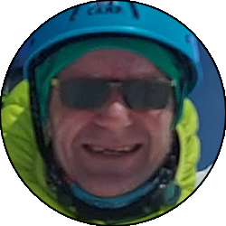
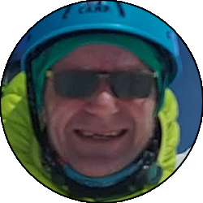

Relazione
| Data Uscita | 08-07-2023, Sabato | Area | Monte Bianco |
|---|---|---|---|
| Luogo di Partenza | Peuterey - Courmayeur (AO) | Quota |
1500m la partenza 3382m il rifugio Torino 3613m il rifugio Cosmiques 4810m la cima 4322m la capanna Vallot 3073m il rifugio Gonella 1969m il rifugio Combal |
| Dislivello | 4000m (circa) | Tempi | 23:00 ore (07:00 ore la via dei Tre Monti) |
| Esposizione | Varie, i Tre Monti Nord-Ovest, la discesa dall'Italiana prima Nord-Ovest, poi Sud-Ovest, poi Sud | Difficoltà Tecnica | II, 55° neve |
| Punti di Appoggio | Rifugio Torino, rifugio Cosmiques, capanna Vallot, rifugio Gonella, rifugio Combal | Acqua | No, si è spesso in ambiente glaciale quindi volendo si può far sciogliere ma acqua di scorrimento si trova soltanto nell'ultima parte della discesa. Ha più senso comprarla ai rifugi. |
| Partecipanti |
 Dello,
 Fede, Dello,
 Fede,
 Oracolo, Oracolo,
 Teo Teo
|
||
(clicca sull'immagine per scarica la traccia GPS)
Accesso
Da Lecco scendere con la SS36 a Milano e prendere la A4 in direzione Torino. Arrivati in zona Santhià si seguono le indicazioni verso Ivrea, dove poi si intercetta la A5 che va seguita in toto fino quasi alla fine, uscendo a Courmayeur. Entrare in paese e superarlo, e prima di raggiungere Entreves scendere verso sinistra (cartelli) in direzione val Veny. Seguire la strada della val Veny fino a una deviazione sulla destra su un tratto pianeggiante con indicazione Peuterey. Seguire questa strada, che diventa presto sterrata, fino alla piccola frazione dove sorge il campeggio, e parcheggiare gratuitamente in un comodo prato sulla sinistra
Avvicinamento
Da Peuterey tornare indietro sulla strada della val Veny, percorrendola a ritroso fino appena oltre all'albergo val Veny (località Plan Ponquet), dove si imbocca la strada che scende sulla sinistra che con un tornante scende verso il parcheggio del traforo del Monte Bianco. Arrivati nei pressi del parcheggio, notare una deviazione sulla sinistra appena dopo un ponte sul torrente che scende dal ghiacciaio della Brenva, la quale va seguita comodamente fino a una cengia panoramica dove sorge un casolare. Appena oltre il casolare si stacca un sentiero ripido sulla sinistra (indicazioni trail Courmayeur): questo sentiero va seguito senza possibilità di errore, ripido ma ben segnato, prima nel bosco e poi su terreno sempre più aperto, finchè porta eventualmente al Pavillon, dove sorge la stazione intermedia della skyway di Punta Helbronner.
Da qui proseguire in salita verso l'evidente sperone su cui sorge il rifugio Torino vecchio, prima per comodo sentiero a tornanti (fino al grande pilone della funivia), che poi diventa un sentiero un po' più scosceso ma sempre ottimamente segnato da bolli gialli. Sui tratti più impegnativi ci sono anche delle corde fisse che seppure non indispensabili, male non fanno. Salire su terreno progressivamente più delicato, ma sempre escursionistico, fino alla crestina finale che porta, superando i piloni della funivia, al comodo terrazzo del rifugio Torino Vecchio. Da qui per raggiungere il rifugio Torino nuovo è sufficiente entrare nella struttura (indicazioni) e uscire su un comodo sentierino che effettuando una curva a sinistra porta alla terrazza Sud-Est del rifugio Torino nuovo, dove raramente ci si troverà da soli.
Dal rifugio Torino raggiungere il Col Flambeaux costeggiando Punta Helbronner sulla destra, e proseguendo poi per comodo ghiacciaio quasi sempre tracciato. Da qui la vista si apre sul ghiacciaio del Gigante e sulla Vallée Blanche, che va attraversata per raggiungere il rifugio Cosmiques. Solitamente tracciata, ma se non lo fosse tenersi tendenzialmente sulla sinistra e attraversare la zona coi peggiori crepacci (quella sotto i satelliti del Tacul), facendo attenzione ai buchi molto grossi che si trovano sul percorso. Superata la Pyramide du Tacul, il percorso adesso è meno esposto a pericoli oggettivi, e si sale un tranquillo dosso nevoso che porta al Col du Midi, largo altopiano glaciale posto ai piedi dell'Aiguille du Midi sulla destra e del rifugio Cosmiques a sinistra. Da qui raggiungere senza problemi il rifugio.
Via
Dal rifugio scendere al Col du Midi e dirigersi verso destra in direzione dell'immenso pendio Nord del Mont Blanc du Tacul. Risalire il pendio prestando attenzione a crepacci e seracchi, superando nel centro un tratto più ripido, seppur breve (50° circa alla nostra ripetizione). Continuare a salire tenendo tendenzialmente la destra, evitando così la maggior parte dei seracchi. Scollinata la spalla del Tacul il percorso diventa più pianeggiante e si individua un punto in cui la traccia scende (se si prosegue dritti si va verso la cima del Tacul) fino al Col Maudit.
Dal Col Maudit si prosegue in traverso verso destra (Ovest) in direzione del grande pendio Nord del Mont Maudit. Questo pendio è il tratto chiave dell'ascensione, e bisogna fare anzitutto attenzione ai seracchi, poi alla crepaccia terminale, per poi finire su un ripido pendio che porta al Col du Mont Maudit. Questo pendio è abbastanza lungo (saranno tra i 50 e i 100m a 55°) e viene spesso attrezzato con una corda fissa: alla data della nostra ripetizione seppur iniziava a essere ghiacciatino la corda fissa c'era solo sulla roccette finali, mentre fino a quel punto bisogna procedere solo con picozza e ramponi (consigliabile proteggersi con qualche vite per sicurezza). Raggiunto lo speroncino con la corda fissa, risalire le roccette verticali con l'aiuto di quest'ultima, uscendo con un ultimo pendietto al colle dove la traccia ritorna pianeggiante, e in leggera discesa passando sotto ai crepacci terminali del lato Sud-Ovest del Maudit (noi abbiamo trovato un breve traverso ghiacciato dove ci siam protetti, ma probabile abbiamo sbagliato via) si raggiunge il Col della Brenva, dove inizia la parte finale della salita.
A questo punto le difficoltà oggettive principali sono finite, ma rimane comunque una salita ripida fino in cima: si affronta anzitutto il Mur de la Cote, tratto particolarmente ripido che tendendo leggermente a destra arriva fino a una piccola spalla sulla cresta Nord del Monte Bianco; da qui in poi la salita in cima è una faticosa (soprattutto visto la quota) salita passo dopo passo su neve e pendenza sempre sostenuta, ma nessuna difficoltà tecnica. Salendo man mano la vista si fa sempre più ampia, fino ad arrivare sul pianoro nevoso che è la cima del Monte Bianco.
Discesa
La discesa può essere effettuata, con le dovute attenzioni, dalla via di salita; in alternativa molte cordate scelgono di scendere per la normale Francese del Gouter, la meno difficile e più veloce che consente di arrivare al trenino del Nid d'Aigle e da lì coi mezzi a Chamonix. Noi invece abbiamo optato, per chiudere l'anello in maniera pulita, di scendere dalla normale Italiana. La prima parte è in comune con la normale francese: dalla cima si scende a destra rispetto a dove si è arrivati (a sinistra si andrebbe verso il Monte Bianco di Courmayeur), seguendo l'affilata ma non difficile cresta delle Bosses, un itinerario molto bello che seguendo quasi sempre fedelmente la cresta porta fino al bellissimo altopiano glaciale del Col du Dome, raggiungendo anzitutto la Capanna Vallot (bivacco non gestito utilizzabile per emergenze).
Dalla Capanna Vallot portarsi al Col du Dome e aggirare la cima del Dome du Gouter a sinistra, portandosi sulla cresta Sud-Ovest di quest'ultimo che scende verso il versante italiano. Affrontare dei tratti un po' più affilati facendo attenzione fino a una piccola cima (il Piton des Italiens) dal quale si segue l'evidente crestina a sinistra che collega il rifugio Gonella (già visibile dal Col du Dome) alla cresta che si sta percorrendo. Seguirla fino a un colletto (Col des Aiguilles Grises) dove si abbandona la cresta per scendere ripidamente sul ghiacciaio del Dome. Attraversare il ghiacciaio, molto crepacciato (attenzione!) tenendo tendenzialmente in alto la sinistra (faccia a valle) e in basso la destra, e superate le numerose insidie si raggiunge una spalla rocciosa che con qualche traverso tra sentiero e nevai permette di raggiungere senza grosse difficoltà il pulpito su cui sorge il rifugio Gonella, dove una pausa è d'obbligo. In stagione avanzata questa discesa potrebbe essere non praticabile, in tal caso bisogna seguire dal colletto la cresta delle Aiguilles Grises, attrezzata nel 2019 da membri della guardia di Finanza di Entreves, che seppur con tempo più lungo (circa 2 ore in più) consente di raggiungere il rifugio Gonella evitando le insidie del ghiacciaio del Dome.
Dal rifugio Gonella si scende tramite roccette, canaponi e qualche attrezzatura da ferrata lo sperone su cui sorge il rifugio, per poi seguire il lungo sentiero che con parecchi traversi verso destra porta fino alla parte terminale del lunghissimo ghiacciaio del Miage. Qui le indicazioni scompaiono ma il percorso non è più obbligato, e seguire il lungo ghiacciaio che poi diventa morena, cercando di non perdere di vista degli ometti molto radi, che non presenta dislivelli importanti ma non si può dire lo stesso sulla lunghezza, praticamente eterna. Dopo una lunga camminata si giunge finalmente in vista dei boschetti della Val Veny, e se non si ha sbagliato troppo la linea si sbuca sul sentiero che porta al rifugio Combal; in alternativa se si fosse all'altezza dei laghetti del Miage, bisogna tenere leggermente la destra per raggiungere il medesimo punto.
Scendendo si è ora sulla strada della val Veny, che va seguita sempre comoda ma anch'essa molto lunga, in discesa verso sinistra tra asfalto e sterrato fino a raggiungere la località di Plan de Lognan, dove sorge il piccolo Chalet del Miage sulla sinistra. Superato il bar, notare un'indicazione verso sinistra su una casa che indica il campeggio di Peuterey: seguirla fino a dove il sentiero attraverso il fiume, poi dopo una breve risalita si scende (altre indicazioni) attraversando un altro fiume prima per comoda strada fino al piccolo nucleo di Freney, poi per sentiero sempre comodo ma molto lungo si prosegue sulla sinistra orografica della Val Veny, fino eventualmente a ritornare a Peuterey al largo parcheggio dove si conclude l'anello.